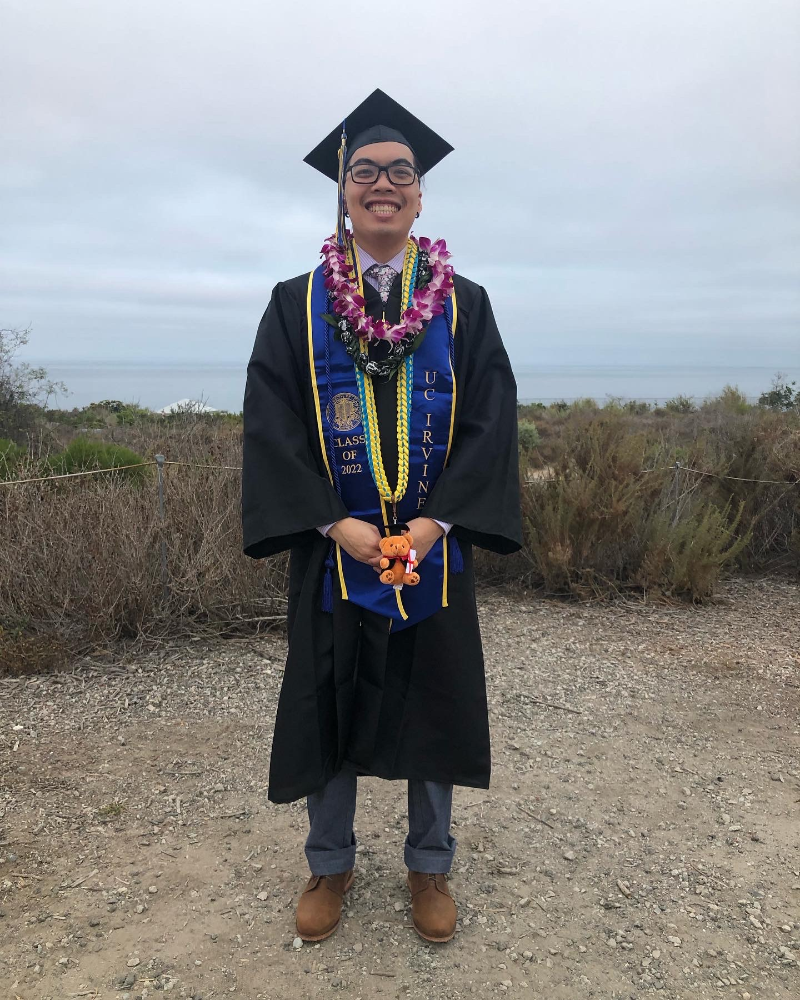

About Me
-
I was born in Hayward, California and raised in Sacramento, California.
-
I currently live in Irvine, California.
-
I used to run track and field and cross country while I was in high school.
-
I currently work as a private tutor helping high school students in their math and science classes.
-
I recently graduated from University of California, Irvine with a Bachelor of Science degree in Physics specializing in education.